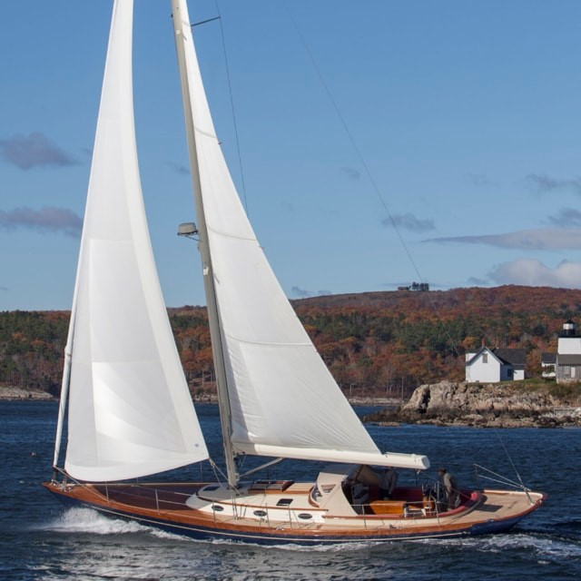

A sailboat or sailing boat is a boat propelled partly or entirely by sails and is smaller than a sailing ship. Distinctions in what constitutes a sailing boat and ship vary bAlthough sailboat terminology has varied across history, many terms have specific meanings in the context of modern yachting.  A great number of sailboat-types may be distinguished by size, hull configuration, keel type, purpose, number and configuration of masts, and sail plan.
The cutter is similar to a sloop with a single mast and mainsail, but generally carries the mast further aft to allow for a jib and staysail to be attached to the head stay and inner forestay, respectively. Once a common racing configuration, today it gives versatility to cruising boats, especially in allowing a small staysail to be flown from the inner stay in high winds. A catboat has a single mast mounted far forward and does not carry a jib. Most modern designs have only one sail, the mainsail; however, the traditional catboat could carry multiple sails from the gaff rig. A dinghy is a type of small open sailboat commonly used for recreation, sail training , and tending a larger vessel. They are popular in youth sailing programs for their short LOA, simple operation and minimal maintenance. They have three (or fewer) sails: the mainsail, jib, and spinnaker
Ketches are similar to a sloop, but there is a second shorter mast astern of the mainmast, but forward of the rudder post. The second mast is called the mizzen mast and the sail is called the mizzen sail. A ketch can also be Cutter-rigged with two head sails. A schooner has a mainmast taller than its foremast, distinguishing it from a ketch or a yawl. A schooner can have more than two masts, with the foremast always lower than the foremost main. Traditional topsail schooners have topmasts allowing triangular topsails sails to be flown above their gaff sails; many modern schooners are Bermuda rigged. The most common modern sailboat is the sloop, which features one mast and two sails, typically a Bermuda rigged main, and a headsail. This simple configuration is very efficient for sailing into the wind. A fractional rigged sloop has its forestay attached at a point below the top of the mast, allowing the mainsail to be flattened to improve performance by raking the upper part of the mast aft by tensioning the backstay. A smaller headsail is easier for a short-handed crew to manage. A yawl is similar to a ketch, with a shorter mizzen mast carried astern the rudderpost more for balancing the helm than propulsion.